01
“梦想启航”庆祝中华人民共和国成立76周年暨迎新生文艺晚会
“梦想启航”迎新生晚会于东校区田径场举办，献礼建国76周年。主持队承担本次晚会全程主持工作。由艺术团承办，原创歌舞、话剧、器乐等红色与耕读主题节目，万名新生师生到场观演，展现校园美育风采，迎接新生逐梦启航。
查看新闻报道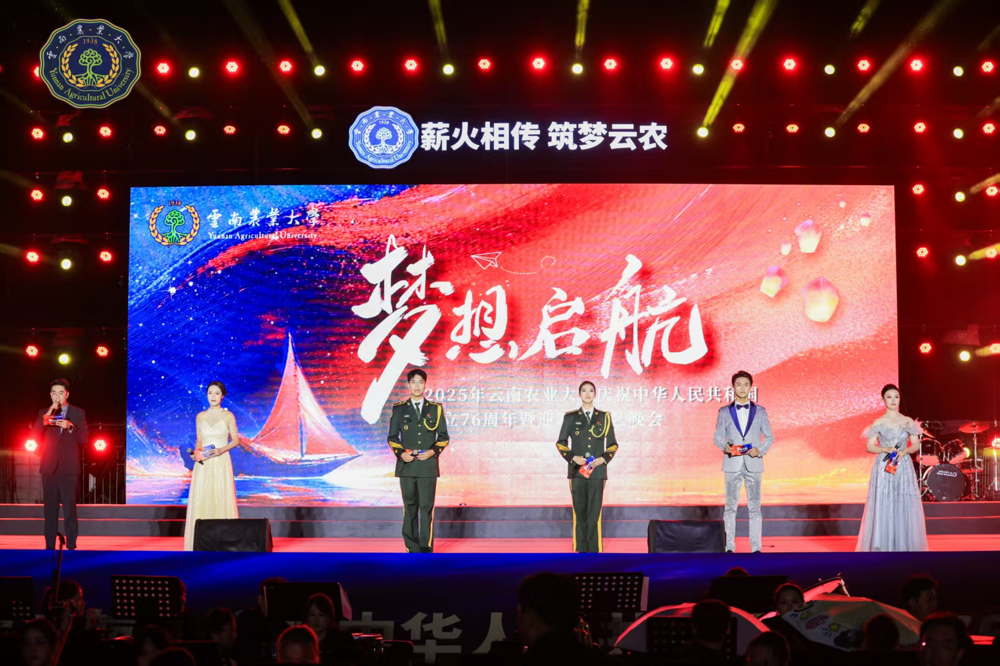
01 / 社团简介
云南农业大学主持队是云南农业大学高水平艺术团下设的特色艺术队伍，依托艺术团平台，面向全校选拔热爱语言表达、具备舞台主持潜力的同学，是学校各类活动重要的语言输出窗口。队伍立足校园美育建设，承担学校、学院各类大型晚会、颁奖典礼、竞赛赛事、文艺汇演、文化走秀等校内外活动的主持工作，覆盖迎新晚会、大学生艺术节、高雅艺术进校园等多项校级品牌活动。
队内重视成员综合能力培养，拥有完善的训练实践体系。日常开展普通话发声、台风仪态、临场应变、稿件撰写等对内集训，打磨队员谈吐气场与控场能力。队员经过选拔入队，以老带新、以练促学，在一场场真实舞台实践中积累经验。
成员积极参与校际交流、校内外展演赛事，不仅局限于舞台主持，也为晚会串场、活动播报、仪式致辞储备人才。队伍以输出优秀校园主持人才为培养目标，鼓励队员手持话筒传递力量，锤炼语言功底，塑造自信从容的舞台气质。同时联动艺术团其他队伍协同配合，助力学校各项文艺活动圆满开展，丰富校园文化氛围。
02 / 精彩瞬间
每一场活动，都是队员从容控场的现场。
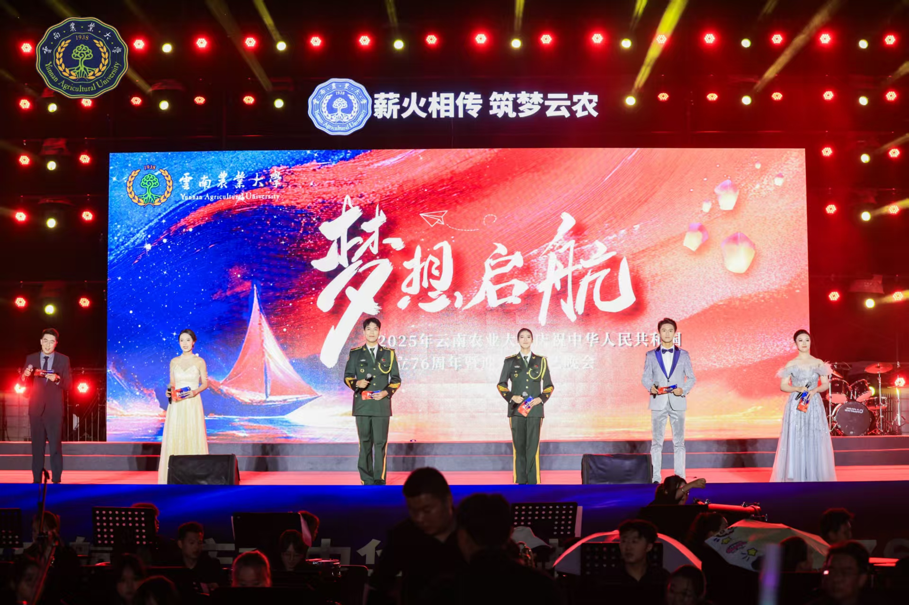
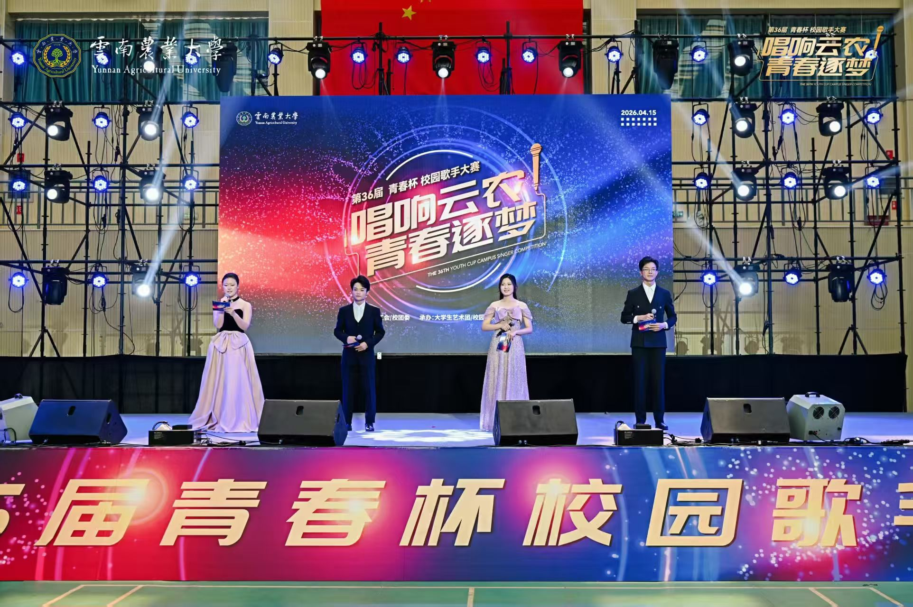
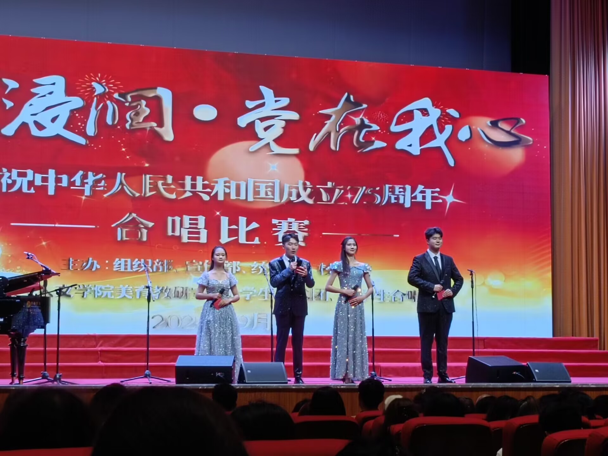
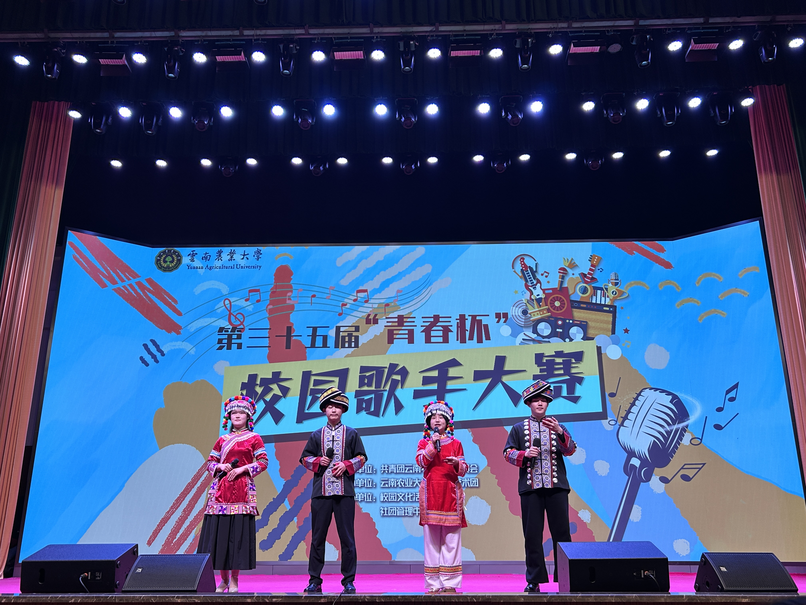
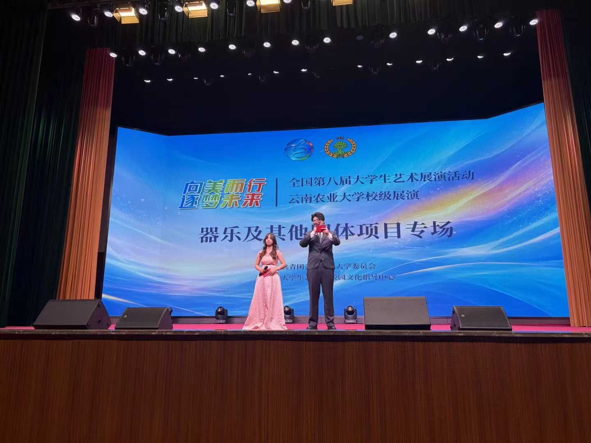
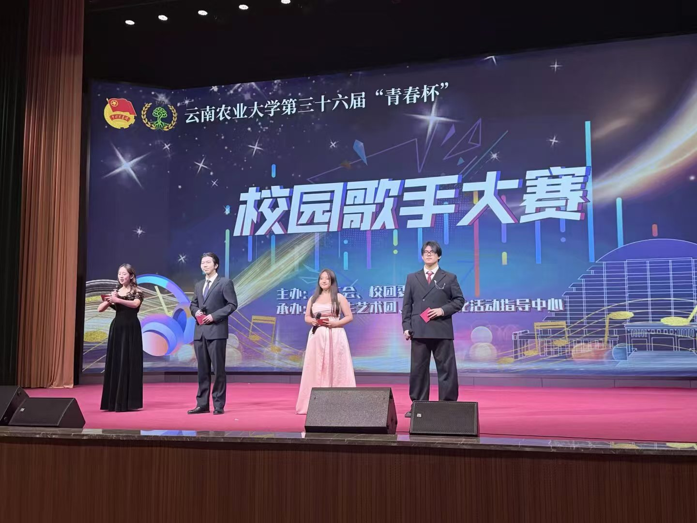
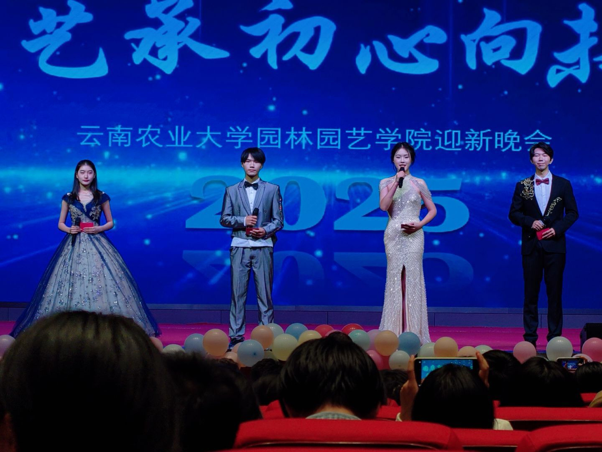
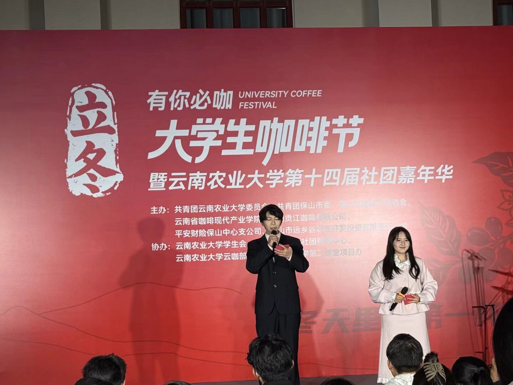
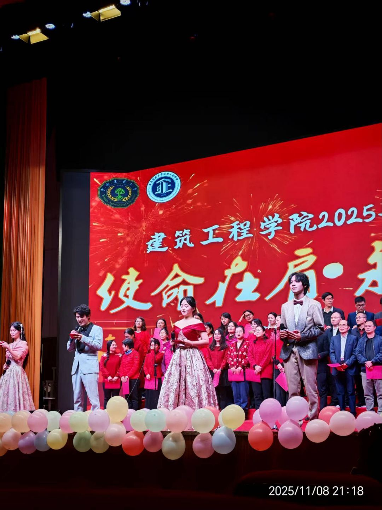
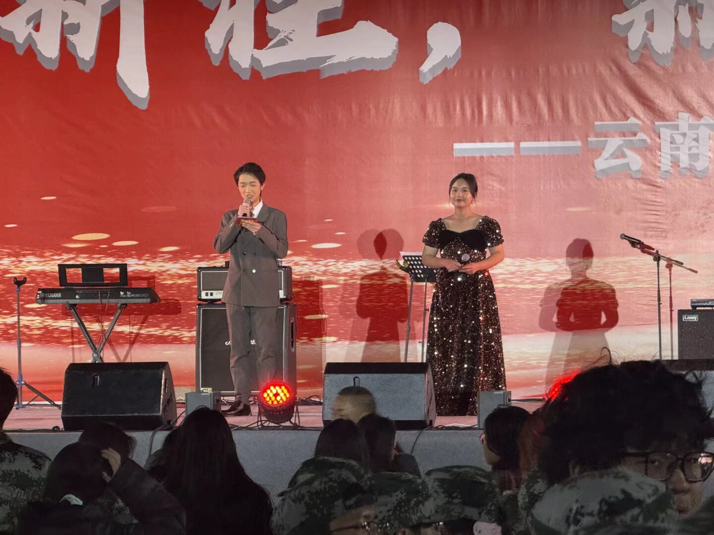
03 / 精彩活动
主持队承担晚会、赛事、展演全程主持，用语言串联每一个舞台现场。
01
“梦想启航”迎新生晚会于东校区田径场举办，献礼建国76周年。主持队承担本次晚会全程主持工作。由艺术团承办，原创歌舞、话剧、器乐等红色与耕读主题节目，万名新生师生到场观演，展现校园美育风采，迎接新生逐梦启航。
查看新闻报道
02
“梦想秀”是由主持队主办的特色品牌活动，主持队全程统筹策划并担任现场主持。选手们从民族文化到乡村振兴，从乡土实践到精神传承，号召广大青年既要扎根泥土，亦要仰望星空，云农青年在此诉说梦想，续写新时代新农人篇章。
查看新闻报道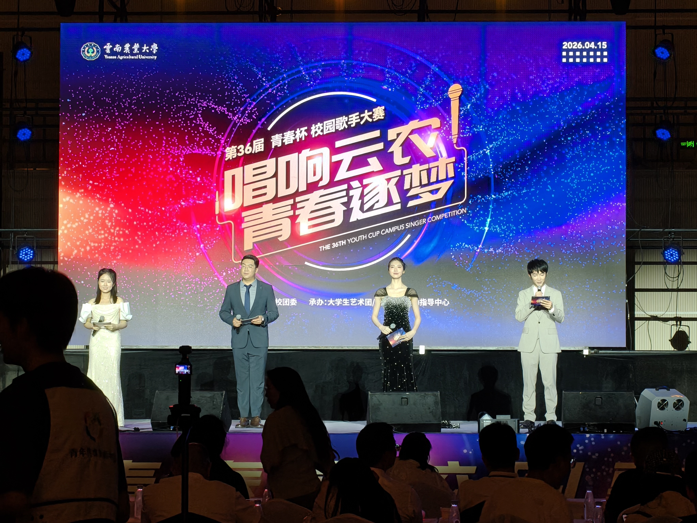
03
本届“青春杯”由艺术团承办，主持队负责赛事主持与现场串场。通过师生同台、大众评审、权威献艺、分贝仪决战等一系列创新举措，为全校师生搭建了展示自我、绽放风采的艺术平台，进一步丰富了校园文化生活。
查看新闻报道04
深入落实美育渗透行动的相关要求，培养“以美育人、以文化人”的理念，主持队完成多专场展演的主持任务。同时丰富校园文化生活，展现农大学生的青春风采！器乐及其他团体项目专场、声乐及朗诵专场、舞蹈专场，三场特别演出充满激情。
查看新闻报道